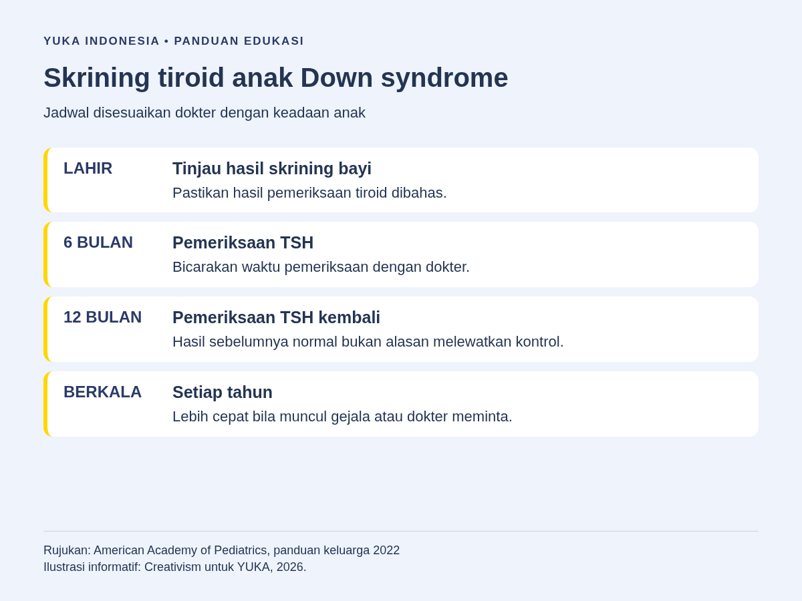
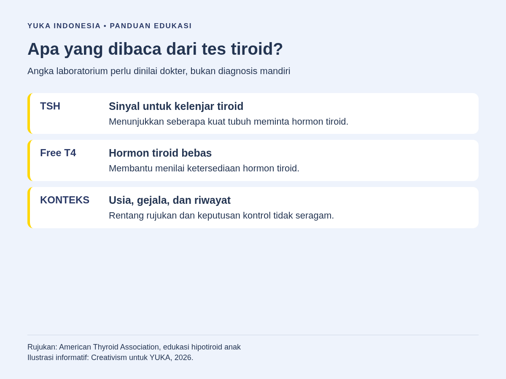
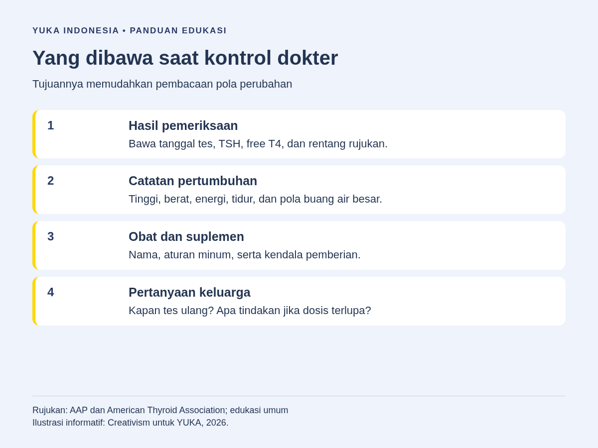

Hipotiroid pada anak Down syndrome perlu dinilai melalui pemeriksaan dokter dan tes fungsi tiroid, bukan disimpulkan dari anak yang tampak lelah atau sulit berkonsentrasi. American Academy of Pediatrics atau AAP menganjurkan peninjauan fungsi tiroid saat lahir, pemeriksaan pada usia 6 bulan dan 12 bulan, lalu pemantauan setiap tahun. Dokter dapat meminta pemeriksaan lebih cepat bila ada perubahan kondisi. Hasil skrining yang pernah normal tidak menghapus kebutuhan kontrol berikutnya.
Orang tua sering sudah memiliki banyak jadwal: kontrol tumbuh kembang, pemeriksaan pendengaran, kegiatan sekolah, dan latihan keterampilan. Pemeriksaan tiroid mudah terselip di antara urusan tersebut, terutama ketika anak tidak menunjukkan keluhan mencolok. Artikel ini membantu Anda memahami apa yang diperiksa, mengapa pemantauan diperlukan, dan catatan apa yang berguna saat konsultasi.
Mengapa Fungsi Tiroid Dibahas dalam Pemantauan Down Syndrome?
Tiroid adalah kelenjar di bagian depan leher yang menghasilkan hormon untuk membantu mengatur berbagai fungsi tubuh. Hormon tiroid berperan dalam pertumbuhan dan perkembangan anak. Hipotiroid berarti tubuh kekurangan hormon tiroid; penyebab dan waktu kemunculannya tidak selalu sama pada setiap orang.
Anak dengan Down syndrome memiliki kebutuhan pemantauan kesehatan yang khusus, termasuk fungsi tiroid. Bila baru mengenal kondisi ini, baca penjelasan Down syndrome terlebih dahulu agar pemeriksaan tiroid ditempatkan sebagai salah satu bagian perawatan, bukan satu-satunya hal yang menentukan keseharian anak.
Menurut American Thyroid Association tentang hipotiroid pada anak dan remaja, kekurangan hormon tiroid dapat berkaitan dengan pertumbuhan yang melambat serta keluhan lain. Pada seorang anak, dokter perlu menggabungkan riwayat, pemeriksaan fisik, dan hasil tes. Tidak ada satu perilaku di rumah yang cukup untuk memastikan diagnosis.
Pengawasan ini bukan berarti setiap anak dengan Down syndrome pasti hipotiroid. Tujuannya adalah mengenali perubahan yang dapat ditangani, sambil tetap mendukung kemampuan dan kesejahteraan anak. Hindari menjelaskan semua kesulitan belajar sebagai masalah hormon sebelum ada pemeriksaan yang memadai.
Jadwal Skrining Tiroid Menurut AAP
Panduan kesehatan keluarga dari AAP menempatkan pemeriksaan tiroid dalam pemantauan berkala anak dengan Down syndrome. Pada masa bayi, hasil skrining perlu ditinjau sejak lahir. Pemeriksaan kembali dibahas pada usia 6 bulan dan 12 bulan, kemudian dilakukan setiap tahun sepanjang masa anak dan remaja.
Jadwal tersebut bukan alasan untuk menunda kunjungan bila ada keluhan sebelum tanggal kontrol. Bila anak yang biasanya aktif menjadi jauh lebih mudah lelah, pertumbuhannya berubah, atau dokter menemukan masalah pada pemeriksaan sebelumnya, kebutuhan tes ulang dapat berbeda. Dokter juga dapat menentukan pemeriksaan tambahan sesuai riwayat anak.
| Tahap pemantauan | Hal yang dibicarakan dengan dokter |
|---|---|
| Sejak lahir | Hasil skrining bayi baru lahir dan apakah evaluasi tiroid sudah cukup. |
| Usia 6 bulan | Pemeriksaan TSH sesuai panduan pemantauan Down syndrome. |
| Usia 12 bulan | Pemeriksaan kembali, walaupun hasil sebelumnya normal. |
| Setiap tahun berikutnya | Kontrol berkala; jadwal lebih cepat bila ada gejala atau kebutuhan klinis. |
Bila riwayat skrining bayi tidak ditemukan, jangan mengisi catatan dengan perkiraan. Sampaikan kepada dokter bahwa hasil belum tersedia dan mintalah arahan. Orang tua tidak perlu menentukan sendiri apakah anak harus menjalani panel pemeriksaan tertentu hanya karena membaca daftar di internet.

Perubahan Apa yang Perlu Dicatat Orang Tua?
Gejala hipotiroid pada anak dapat tidak mencolok. American Thyroid Association menyebut beberapa keluhan yang dapat menyertai kekurangan hormon tiroid, antara lain lelah, konstipasi, mudah merasa dingin, serta kulit yang kering. Pertumbuhan yang melambat juga perlu dibicarakan. Keluhan seperti ini tidak khusus untuk hipotiroid dan bisa mempunyai penyebab lain.
Catat perubahan dibanding kebiasaan anak sendiri. Misalnya, sebelumnya ia bisa mengikuti kegiatan sampai selesai tetapi kini lebih sering meminta istirahat. Tuliskan kapan perubahan mulai tampak, seberapa sering terjadi, dan apakah ada keluhan lain. Catatan konkret lebih berguna daripada hanya mengatakan anak sedang malas.
- Energi dan partisipasi: apakah kegiatan sehari-hari menjadi lebih sulit diikuti?
- Pola buang air besar: adakah perubahan yang menetap dibanding kebiasaan sebelumnya?
- Pertumbuhan: bawa catatan tinggi dan berat yang sudah diukur.
- Kulit, kenyamanan terhadap suhu, tidur, dan keluhan lain yang baru muncul.
- Perubahan obat, suplemen, pola makan, atau penyakit lain sebelum keluhan dimulai.
Tidak semua perubahan perlu dianggap keadaan darurat, tetapi keluhan yang mengganggu aktivitas layak dinilai. Jangan menunggu kontrol tahunan untuk meminta arahan bila kondisi memburuk. Jika anak sulit dibangunkan, mengalami gangguan napas, atau tampak sangat sakit, cari pertolongan medis segera, bukan mencoba menebak penyebabnya melalui daftar gejala tiroid.
Memahami TSH dan Free T4 Tanpa Mendiagnosis Sendiri
TSH adalah singkatan dari thyroid-stimulating hormone, hormon yang memberi sinyal agar kelenjar tiroid bekerja. Free T4 atau FT4 adalah bagian hormon tiroksin yang tidak terikat protein dalam darah. Dalam evaluasi fungsi tiroid, dokter dapat membaca keduanya sesuai keadaan anak.
Angka laboratorium tidak berdiri sendiri. Usia, rentang rujukan laboratorium, gejala, riwayat skrining, dan hasil pemeriksaan sebelumnya membantu menentukan maknanya. Dua lembar hasil dari tempat berbeda tidak selalu dapat dibandingkan tanpa memperhatikan satuan dan rentang rujukannya.
Istilah hipotiroid subklinis biasanya digunakan saat TSH meningkat tetapi free T4 masih berada dalam rentang rujukan. Namun, orang tua tidak perlu memberi label itu sendiri. Keputusan tentang pemeriksaan ulang, pemantauan, atau terapi harus dibuat dokter; tidak setiap hasil yang sedikit berubah menghasilkan rencana yang sama.
Saat menerima hasil, tanyakan: “Apakah hasil ini perlu diulang?”, “Apa artinya untuk keadaan anak saya?”, dan “Kapan kami harus kembali?” Simpan hasil lengkap, bukan hanya angka yang ditulis ulang di pesan. Ini membantu dokter melihat pola dan menghindari keputusan berdasarkan satu hasil tanpa konteks.

Bila Dokter Menetapkan Hipotiroid, Apa Langkah Berikutnya?
Penanganan hipotiroid pada anak mengikuti penyebab dan hasil evaluasi. Dokter dapat meresepkan hormon tiroid pengganti ketika memang diperlukan. American Thyroid Association mengenai terapi hormon tiroid pada anak menjelaskan pentingnya pemakaian obat dan pemantauan melalui tes darah.
Artikel ini tidak memberikan dosis karena kebutuhan anak berbeda dan dapat berubah selama pertumbuhan. Jangan menggunakan obat milik anggota keluarga lain. Jangan pula menghentikan obat karena anak tampak lebih segar, atau menaikkan dosis karena angka pada hasil tes belum sesuai harapan.
Minta dokter atau apoteker menjelaskan cara pemberian, waktu minum, serta tindakan bila dosis terlupa atau anak muntah. Sampaikan semua suplemen yang diminum, termasuk produk yang disebut vitamin, herbal, atau tambahan nutrisi. Bahan tertentu, seperti zat besi dan kalsium, dapat memengaruhi penyerapan obat tiroid sehingga aturan penggunaannya perlu dibahas.
Perbaikan hasil laboratorium tidak berarti seluruh kebutuhan pendidikan dan perkembangan anak selesai. Pemeriksaan tiroid membantu menangani satu aspek kesehatan. Anak tetap memerlukan dukungan belajar, komunikasi, aktivitas, dan hubungan sosial yang sesuai kemampuannya. Jangan menjanjikan bahwa obat akan menghilangkan Down syndrome atau memastikan suatu tingkat kemampuan tertentu. Informasi tentang intervensi dini dan terapi okupasi dapat dibaca untuk memahami dukungan perkembangan yang berbeda dari penanganan medis tiroid.
Mempersiapkan Konsultasi agar Pertemuan Lebih Terarah
Buat satu folder sederhana berisi hasil pemeriksaan lama dan catatan kontrol. Anda tidak perlu membuat sistem yang rumit. Hal terpenting adalah tanggal, perubahan yang diamati, dan aturan pengobatan dapat ditemukan saat dibutuhkan. Bila beberapa anggota keluarga mendampingi bergantian, gunakan catatan yang sama.
Sebelum konsultasi, pilih pertanyaan yang paling mendesak. Contohnya, apakah jadwal tes berikutnya berubah, adakah keluhan yang harus dilaporkan lebih cepat, atau bagaimana menjaga pemberian obat tetap konsisten. Tuliskan jawaban setelah pertemuan agar tidak mengandalkan ingatan ketika mengurus banyak hal sekaligus.
- Hasil skrining bayi dan hasil TSH/free T4 sebelumnya, bila tersedia.
- Catatan tinggi dan berat, tanpa menilai pertumbuhan dari foto saja.
- Daftar obat atau suplemen beserta kendala pemberiannya.
- Perubahan energi, tidur, pola buang air besar, dan kegiatan harian.
- Tanggal kontrol terakhir serta pertanyaan tentang tindak lanjut.
Bila akses layanan menjadi kendala, tanyakan alur rujukan dan tempat pemeriksaan yang sesuai. Panduan mengajukan bantuan untuk anak disabilitas dapat membantu keluarga menyusun kebutuhan layanan; informasi tersebut tidak menggantikan petunjuk fasilitas kesehatan atau menjamin biaya pemeriksaan ditanggung suatu program.

Membedakan pertanyaan medis dan kebutuhan sehari-hari
Sebelum berangkat, pisahkan pertanyaan menjadi dua kelompok. Pertanyaan medis mencakup makna hasil tes, kebutuhan pemeriksaan berikutnya, dan aturan pengobatan. Pertanyaan sehari-hari mencakup cara keluarga mengingat jadwal, siapa yang menyimpan hasil, dan bagaimana menyampaikan perubahan kepada pendamping. Pemisahan ini membantu konsultasi tetap fokus tanpa mengabaikan kenyamanan anak.
Contohnya, orang tua bisa mengatakan: “Kami melihat anak lebih sering meminta istirahat sejak dua minggu terakhir. Ini catatan kegiatan dan hasil tes terakhirnya. Apakah ada pemeriksaan yang perlu dilakukan lebih awal?” Kalimat tersebut memberikan waktu kejadian dan bukti yang tersedia, tanpa menyimpulkan bahwa penyebabnya pasti tiroid. Dokter tetap menilai kemungkinan lain sesuai keadaan anak.
Setelah konsultasi, catat satu langkah berikutnya dengan jelas: kapan kontrol, siapa yang perlu dihubungi bila keluhan berubah, dan berkas apa yang dibawa. Bila instruksi belum dipahami, minta penjelasan ulang. Orang tua tidak harus memahami semua istilah endokrinologi untuk dapat mengikuti rencana perawatan yang telah disepakati.
Peran Guru dan Pendamping: Mencatat, Bukan Menentukan Diagnosis
Guru dapat membantu keluarga melihat perubahan yang berlangsung di sekolah. Catatan sebaiknya berupa kejadian yang dapat diamati: anak meminta istirahat lebih sering, keikutsertaan dalam kegiatan berubah, atau kemampuan mengikuti rutinitas menurun. Hindari memberi label gangguan hormon hanya berdasarkan perilaku tersebut.
Komunikasikan pengamatan kepada orang tua secara privat dan tidak menyalahkan anak. Informasi medis milik keluarga tidak perlu diumumkan kepada teman sekelas. Penyesuaian kegiatan dapat dibicarakan berdasarkan kebutuhan yang sudah disampaikan orang tua atau tenaga kesehatan.
Perawatan Down syndrome juga mencakup area lain. Artikel mengenai masalah penglihatan pada anak Down syndrome memberi konteks bahwa kesulitan dalam kegiatan tidak selalu berasal dari tiroid. Karena itu, pemeriksaan kesehatan dan dukungan pendidikan perlu dilihat bersama, bukan mencari satu penjelasan untuk semua perubahan.
Pertanyaan yang Sering Diajukan
Apakah semua anak Down syndrome mengalami hipotiroid?
Tidak. Kebutuhan skrining berkala tidak berarti setiap anak pasti mengalami hipotiroid. Diagnosis memerlukan evaluasi dokter dan pemeriksaan fungsi tiroid sesuai kondisi anak.
Kapan pemeriksaan tiroid anak Down syndrome dilakukan?
Panduan keluarga AAP mencakup peninjauan saat lahir, pemeriksaan usia 6 bulan dan 12 bulan, lalu setiap tahun. Dokter dapat meminta pemeriksaan lebih cepat bila muncul gejala atau ada hasil yang perlu dipantau.
Apakah hasil skrining bayi yang normal berarti tidak perlu tes lagi?
Tidak. Hasil normal saat bayi menjelaskan kondisi pada waktu itu, bukan jaminan bahwa fungsi tiroid akan tetap sama. Pemantauan berikutnya mengikuti jadwal dan arahan dokter.
Apakah anak yang lelah atau sembelit pasti hipotiroid?
Tidak. Keluhan tersebut tidak khusus untuk hipotiroid. Catat perubahan dan bicarakan dengan dokter agar penyebabnya dinilai, tanpa menyimpulkan diagnosis dari gejala saja.
Bolehkah dosis obat tiroid diubah berdasarkan hasil laboratorium?
Jangan mengubah dosis sendiri. Dokter perlu menilai hasil tes, keadaan anak, dan riwayat obat sebelum menentukan penyesuaian. Minta instruksi yang jelas bila ada kendala pemberian obat.
Menjaga Pemantauan Tetap Konsisten dan Ramah bagi Anak
Langkah yang paling membantu bukan menghafal angka laboratorium, melainkan memastikan jadwal kontrol diketahui, perubahan dicatat, dan hasil pemeriksaan dibahas bersama dokter. Gunakan sumber edukasi untuk menyiapkan pertanyaan, bukan menggantikan keputusan klinis.
YUKA mendukung keluarga, guru, dan pendamping memahami kebutuhan anak dengan pendekatan yang menghargai kemampuan serta privasinya. Informasi pendidikan yang baik berjalan bersama layanan kesehatan yang tepat, tanpa menjanjikan hasil yang tidak dapat dipastikan.
Bacaan Terkait
Status tinjauan medis: artikel ini disusun oleh tim pendidik, belum ditinjau oleh dokter berlisensi. Tinjauan oleh tenaga medis berkredensial sedang kami siapkan dan status ini akan diperbarui di halaman ini begitu selesai. Alur tinjauan dan koreksi dijelaskan di Kebijakan Editorial YUKA. Untuk keputusan diagnosis atau terapi, rujuklah pada dokter anak, psikiater anak, psikolog, atau terapis yang menangani anak.
Sumber dan Referensi
- American Academy of Pediatrics: panduan kesehatan keluarga anak dan remaja dengan Down syndrome (2022)
- American Thyroid Association: Hypothyroidism in Children and Adolescents
- American Thyroid Association: Thyroid Hormone Treatment in Children and Adolescents
Catatan: Artikel ini bersifat edukasi umum dan bukan pengganti konsultasi dengan psikolog, tenaga kesehatan, atau petugas layanan sosial resmi. Sumber diperiksa 8 Oktober 2026. Jadwal panduan merupakan rujukan edukasi; dokter menentukan kebutuhan pemeriksaan dan penanganan masing-masing anak.